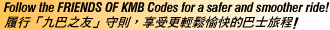

| Smile And Be Courteous 開心微笑，以禮待人 |
Keep Bus Compartment Clean 車廂清潔，人人有責 |
Assist Passengers In Need 義不容辭，熱心助人 |
Be Considerate To The Next Passenger, Make Sure Windows Are Closed When Raining 為人著想，落雨關窗 |
| Be Cooperative, Notify Bus Captain Of Any Bus Impairments 設施欠妥，告知車長 |
Understand "Notes To Passengers" Displayed In All Buses 「乘客須知」，瞭如指掌 |
 | |

 |
 |
 |
 |
| Home | KMB News | Message | Keep HK on the Move | Airport Bus
| Enquiry Guide | KMB Song | Friends of KMB |
All Rights Reserved. KMB Copyright 1996 ©
Service by NETmarket - Hong Kong Star Internet Ltd.